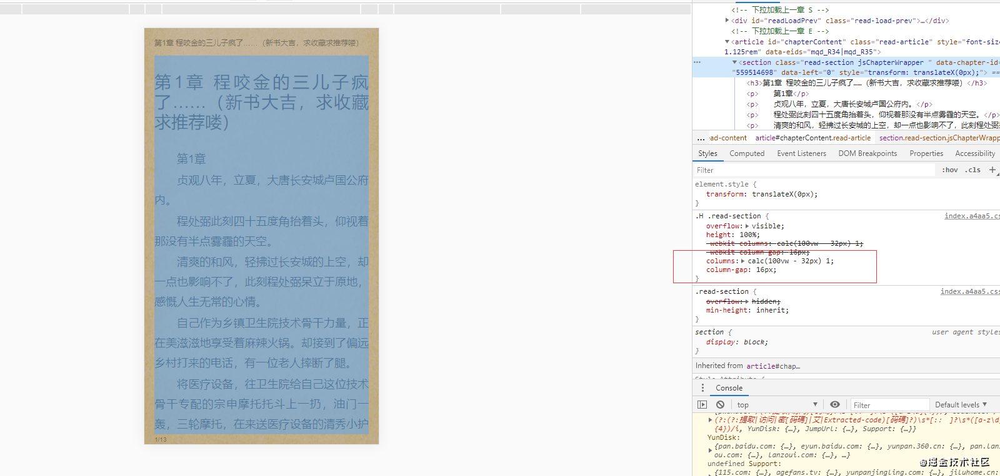
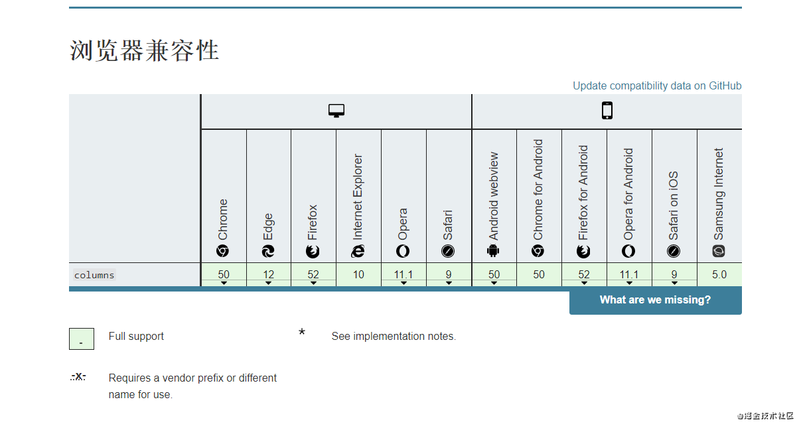
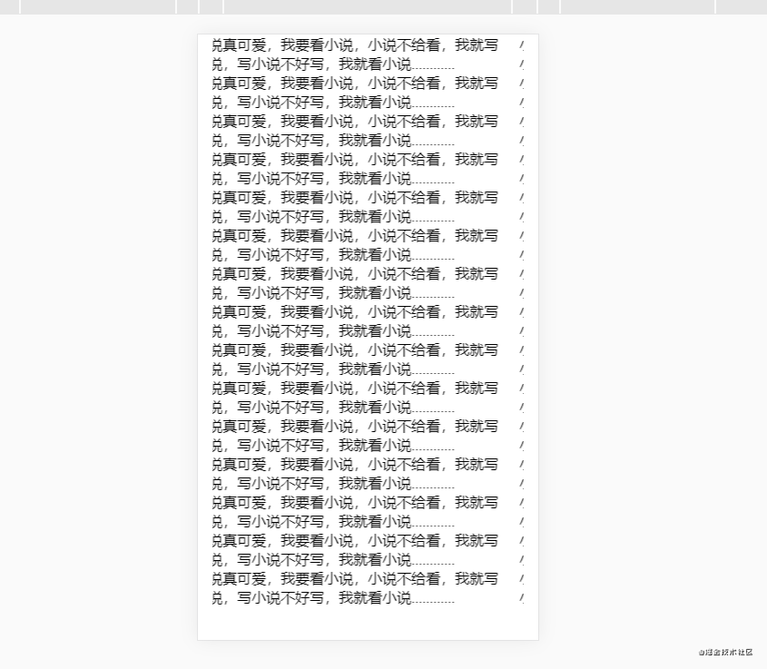

# 前端实现一个小说分页的功能
# 先让我找找我的思路在哪里
在小说读书APP中，都会有分页的功能，那么前端如何实现这个功能呢？
因为没有什么思路，那就只能在前辈的项目中寻找思路了。
这不，直接打开起点的页面，按下那个传说中的F12键，开始我传奇生涯！...不好意思，串台了
好了，然后在找一本有缘书，跟我一同前往那神秘的未知世界。
就决定是你了，开始免费试读。

然后我们就可以发现起点是如何实现这个功能的了，原来是使用 columns这个属性来让文章自动分页的昂。
我们现在就去搜索一下 columns是何方神圣吧。
developer.mozilla.org/zh-CN/docs/… - MDN
通过MDN的实例我们知道了原来 columns是一个简写属性，代表了 column-width 和 column-count两个属性，这两个属性又分别代表着：
<'column-width'>
理想的列宽，定义为 或 auto 关键字。实际宽度可以更宽或更窄以适合可用空间。See column-width。
<'column-count'>
元素内容应分成的理想列数，定义为 或 auto 关键字。如果此值和列的宽度都不是 auto ，则它仅指示允许的最大列数。请参阅 column-count 。 - MDN
然后我们再看回起点中对这个属性的定义 columns: calc(100vw - 32px) 1;
其中 calc(100vw - 32px)这个代表 column-width的值代表了每一列的宽度为整屏的宽度再减去两边的间隙各 16px。
这里一提
column-gap就是列与列的间隙，所以在图中可以看到这里的值设置了16px
而代表 column-count这个值的 1就是只保持一列，并没有什么作用，因为 100vw - 32px这个宽度已经不可能让屏幕中再多一列了，多出的列数将会排列在右侧。
当使用 columns 规定两个值时，如:
columns: 100px 3;
表示：
当每列宽度大于 100px 时，就以 3 列分割显示；当浏览器宽度缩小，导致在 3 列情况下无法满足每列大于 100px，就开始转为 2 列；当浏览器再缩小，2 列中每列无法再保持 100px 每列时，再次转为 1 列...
以此类推，"100px" 为每列不可低于的宽值，"3" 表示指定要显示的列。相对于单独设置 column-width 或 column-count，columns 要更加灵活。 - 菜鸟教程 - Kai
还有一点需要注意的是，需要将文章的高度设置为屏幕的高度，这样才会排成多列。
再通过 translate进行平移，以及父级的 overflow: hidden隐藏多余列，就可以达到分页的效果了。
最后看看 columns的兼容性:

可以看出都支持了这个属性，可以放心大胆的用。
# 思路已至，码来！
我们来简单的实现一下这个效果。
// index.html
<!DOCTYPE html>
<html lang="en">
<head>
<meta charset="UTF-8">
<meta name="viewport" content="width=device-width, initial-scale=1.0">
<title>Document</title>
<link rel="stylesheet" href="./style.css">
<script src="./vue.js"></script>
</head>
<body>
<div class="wrapper">
<article>
<h3>第一章: 我不是小说</h3>
<p>小说真可爱，我要看小说，小说不给看，我就写小说，写小说不好写，我就看小说............</p> <!-- *1000 -->
</article>
</div>
<script src="./app.js"></script>
</body>
</html>
复制代码
// style.css
* {
margin: 0;
padding: 0;
box-sizing: border-box;
}
.wrapper{
height: 100vh;
overflow: hidden;
margin: 0 16px;
}
article{
columns: calc(100vw - 32px) 1;
column-gap: 16px;
height: 100%;
transition: .4s;
}
复制代码
let i = 0;
let article = document.querySelector('article');
setInterval(() => {
let width = document.body.offsetWidth;
i++;
if(i > 3) i = 0;
article.style.transform = `translateX(-${(width - 16) * i}px)`
}, 1000);
复制代码
最后实现的效果就是:

# 完了完了
最后的最后，来波小星星吧。
github.com/lionet1224/…
.markdown-body pre,.markdown-body pre>code.hljs{color:#333;background:#f8f8f8}.hljs-comment,.hljs-quote{color:#998;font-style:italic}.hljs-keyword,.hljs-selector-tag,.hljs-subst{color:#333;font-weight:700}.hljs-literal,.hljs-number,.hljs-tag .hljs-attr,.hljs-template-variable,.hljs-variable{color:teal}.hljs-doctag,.hljs-string{color:#d14}.hljs-section,.hljs-selector-id,.hljs-title{color:#900;font-weight:700}.hljs-subst{font-weight:400}.hljs-class .hljs-title,.hljs-type{color:#458;font-weight:700}.hljs-attribute,.hljs-name,.hljs-tag{color:navy;font-weight:400}.hljs-link,.hljs-regexp{color:#009926}.hljs-bullet,.hljs-symbol{color:#990073}.hljs-built_in,.hljs-builtin-name{color:#0086b3}.hljs-meta{color:#999;font-weight:700}.hljs-deletion{background:#fdd}.hljs-addition{background:#dfd}.hljs-emphasis{font-style:italic}.hljs-strong{font-weight:700} 文章来源：https://juejin.cn/post/6886418644381728776